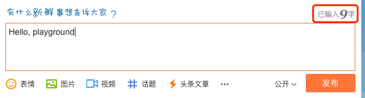

用 Go 如何实现精准统计文章字数
大家好，我是站长 polarisxu。
今天要聊的内容应该可以当做一道面试题，你可以先想想该怎么实现。
统计字数是一个很常见的需求，很多人印象最深的应该是微博早些时候限制 140 字，而且边输入会边统计剩余字数。现在很多社区文章也会有字数统计的功能，而且可以依据字数来预估阅读时间。比如 Go语言中文网就有这样的功能。
01 需求分析
下手之前先分析下这个需求。从我个人经验看，在实际面试中，针对一个面试题，你的分析过程，循序渐进的解决方案，可以很好的展示你的思考过程。正所谓分析问题、解决问题。这会给你加分的。
我们采用类似词法分析的思路分析这个需求。
一篇文章通常包含如下元素，我们也称之为 token：
- 普通文字
- 标点符号
- 图片
- 链接（包含各种协议的链接）
- 代码
其中普通文字通常会分为欧美和中日韩（CJK），因为 CJK 属于表意文字，和欧美字母的文字差异很大。同时这里还涉及到编码的问题。本文假设使用 UTF-8 编码。
对于标点符号，中文标点和英文标点也会很不一样。
此外还有全角和半角的问题。
根据以上分析，对于该需求作如下假定：
- 空格（包括换行）不算字数；
- HTML 标签需要剔除；
- 编码方式：假定为 UTF-8 编码；
- 标点符号算不算做字数。如果算，像括号这样的按 2 个字算；
- 链接怎么算？一个链接约定为 1 个字可能更合适，大概阅读时只是把它当链接，而不太会关心链接由什么字母组成；
- 图片不算做字数，但如果计算阅读时间，可能需要适当考虑图片的影响；
- 对于技术文章，代码是最麻烦的。统计代码字数感觉是没多大意义的。统计代码行数可能更有意义；
本文的解决方案针对以上的假定进行。
02 Go 语言实现
先看最简单的。
纯英文
根据以上分析，如果文章只包含普通文本且是英文，也就是说，每个字（单词）根据空格分隔，统计是最简单的。
func TotalWords(s string) int {
n := 0
inWord := false
for _, r := range s {
wasInWord := inWord
inWord = !unicode.IsSpace(r)
if inWord && !wasInWord {
n++
}
}
return n
}
还有一种更简单的方式：
len(strings.Fields(s))
不过看 strings.Fields 的实现，性能会不如第一种方式。
回顾上面的需求分析，会发现这个实现是有 Bug 的。比如下面的例子：
s1 := "Hello,playground"
s2 := "Hello, playground"
用上面的实现，s1 的字数是 1，s2 的字数是 2。它们都忽略了标点符号。而且因为写法的多样性（不规范统一），导致计算字数会有误差。所以我们需要对写法进行规范。
规范排版
其实和写代码要有规范一样，文章也是有规范的。比如出版社对于一本书的排版会有明确的规定。为了让我们的文章看起来更舒服，也应该遵循一定的规范。
这里推荐一个 GitHub 上的排版指南：《中文文案排版指北》 ，它的宗旨，统一中文文案、排版的相关用法，降低团队成员之间的沟通成本，增强网站气质。这个规范开头关于空格的一段话很有意思：
有研究显示，打字的时候不喜欢在中文和英文之间加空格的人，感情路都走得很辛苦，有七成的比例会在 34 岁的时候跟自己不爱的人结婚，而其余三成的人最后只能把遗产留给自己的猫。毕竟爱情跟书写都需要适时地留白。
建议大家可以看看这个指北，一些知名的网站就是按照这个做的。
因为 GCTT 的排版在这个规范做，但人为约束不是最好的方法，所以我开发了一个 Go 工具：https://github.com/studygolang/autocorrect，用于自动给中英文之间加入合理的空格并纠正专用名词大小写。
所以为了让字数统计更准确，我们假定文章是按一定的规范书写的。比如上面的例子，规范的写法是 s2 := "Hello, playground"。不过这里标点不算作字数。
刚去微博上试了一下，发现微博的字数计算方式有点诡异，竟然是 9 个字。

测试一下发现，它直接把两个英文字母算作一个字（两个字节算一个字）。而汉字是正常的。大家可以想想微博是怎么实现的。
中英文混合
中文不像英文，单词之间没有空格分隔，因此开始的那两种方式不适合。
如果是纯中文，我们怎么计算字数呢？
在 Go 语言中，字符串使用 UTF-8 编码，一个字符用 rune 表示。因此在标准库中查找相关计算方法。
func RuneCountInString(s string) (n int)
这个方法能计算字符串包含的 rune（字符）数，对于纯中文，就是汉字数。
str := "你好世界"
fmt.Println(utf8.RuneCountInString(str))
以上代码输出 4。
然而，因为很多时候文章会中英文混合，因此我们先采用上面的纯英文的处理方式，即：strings.Fields()，将文章用空格分隔，然后处理每一部分。
func TotalWords(s string) int {
wordCount := 0
plainWords := strings.Fields(s)
for _, word := range plainWords {
runeCount := utf8.RuneCountInString(word)
if len(word) == runeCount {
wordCount++
} else {
wordCount += runeCount
}
}
return wordCount
}
增加如下的测试用例：
func TestTotalWords(t *testing.T) {
tests := []struct {
name string
input string
want int
}{
{"en1", "hello,playground", 2},
{"en2", "hello, playground", 2},
{"cn1", "你好世界", 4},
{"encn1", "Hello你好世界", 5},
{"encn2", "Hello 你好世界", 5},
}
for _, tt := range tests {
t.Run(tt.name, func(t *testing.T) {
if got := wordscount.TotalWords(tt.input); got != tt.want {
t.Errorf("TotalWords() = %v, want %v", got, tt.want)
}
})
}
}
发现 en1 和 encn1 测试不通过，因为没有按照上面说的规范书写。因此我们通过程序增加必要的空格。
// AutoSpace 自动给中英文之间加上空格
func AutoSpace(str string) string {
out := ""
for _, r := range str {
out = addSpaceAtBoundary(out, r)
}
return out
}
func addSpaceAtBoundary(prefix string, nextChar rune) string {
if len(prefix) == 0 {
return string(nextChar)
}
r, size := utf8.DecodeLastRuneInString(prefix)
if isLatin(size) != isLatin(utf8.RuneLen(nextChar)) &&
isAllowSpace(nextChar) && isAllowSpace(r) {
return prefix + " " + string(nextChar)
}
return prefix + string(nextChar)
}
func isLatin(size int) bool {
return size == 1
}
func isAllowSpace(r rune) bool {
return !unicode.IsSpace(r) && !unicode.IsPunct(r)
}
这样可以在 TotalWords 函数开头增加 AutoSpace 进行规范化。这时结果就正常了。
处理标点和其他类型
以上例子标点没计算在内，而且如果英文和中文标点混合在一起，情况又复杂了。
为了更好地实现开始的需求分析，重构以上代码，设计如下的结构：
type Counter struct {
Total int // 总字数 = Words + Puncts
Words int // 只包含字符数
Puncts int // 标点数
Links int // 链接数
Pics int // 图片数
CodeLines int // 代码行数
}
同时将 TotalWords 重构为 Counter 的 Stat 方法，同时记录标点数：
func (wc *Counter) Stat(str string) {
wc.Links = len(rxStrict.FindAllString(str, -1))
wc.Pics = len(imgReg.FindAllString(str, -1))
// 剔除 HTML
str = StripHTML(str)
str = AutoSpace(str)
// 普通的链接去除（非 HTML 标签链接）
str = rxStrict.ReplaceAllString(str, " ")
plainWords := strings.Fields(str)
for _, plainWord := range plainWords {
words := strings.FieldsFunc(plainWord, func(r rune) bool {
if unicode.IsPunct(r) {
wc.Puncts++
return true
}
return false
})
for _, word := range words {
runeCount := utf8.RuneCountInString(word)
if len(word) == runeCount {
wc.Words++
} else {
wc.Words += runeCount
}
}
}
wc.Total = wc.Words + wc.Puncts
}
var (
rxStrict = xurls.Strict()
imgReg = regexp.MustCompile(`<img [^>]*>`)
stripHTMLReplacer = strings.NewReplacer("\n", " ", "</p>", "\n", "<br>", "\n", "<br />", "\n")
)
// StripHTML accepts a string, strips out all HTML tags and returns it.
func StripHTML(s string) string {
// Shortcut strings with no tags in them
if !strings.ContainsAny(s, "<>") {
return s
}
s = stripHTMLReplacer.Replace(s)
// Walk through the string removing all tags
b := GetBuffer()
defer PutBuffer(b)
var inTag, isSpace, wasSpace bool
for _, r := range s {
if !inTag {
isSpace = false
}
switch {
case r == '<':
inTag = true
case r == '>':
inTag = false
case unicode.IsSpace(r):
isSpace = true
fallthrough
default:
if !inTag && (!isSpace || (isSpace && !wasSpace)) {
b.WriteRune(r)
}
}
wasSpace = isSpace
}
return b.String()
}
代码过多的细节不讨论。此外，关于文章内的代码行数统计未实现（目前没有想到特别好的方法，如果你有，欢迎交流）。
03 总结
通过本文的分析发现，精准统计字数没那么容易，这里涉及到很多的细节。
当然，实际应用中，字数不需要那么特别精准，而且对于非正常文字（比如链接、代码）怎么处理，会有不同的约定。
本文涉及到的完整代码放在 GitHub：https://github.com/polaris1119/wordscount。